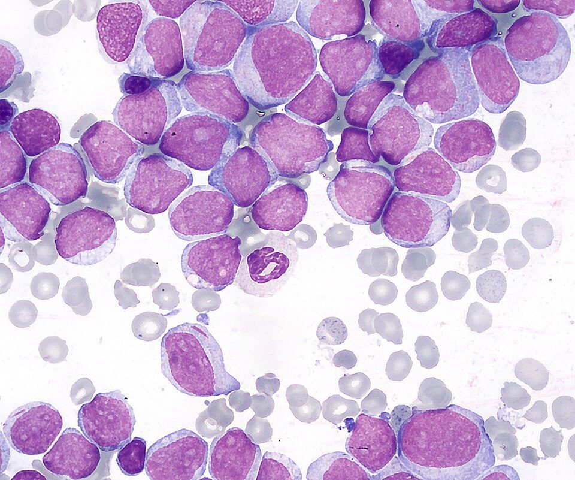

Información divulgativa. No sustituye la valoración de tu equipo médico ni sirve para decidir un tratamiento.

.jpg){kind=link}
En resumen
| Frecuencia | 3-4 casos por 100.000 al año; edad media al diagnóstico de 68 años |
| Factores de riesgo | Edad, quimioterapia o radioterapia previas, tabaco, benceno, síndromes mielodisplásicos previos |
| Genética clave | NPM1, FLT3, IDH1/2, CEBPA, TP53, reordenamientos de KMT2A |
| Tratamiento | Quimioterapia intensiva ("7+3") ± dirigidos; azacitidina con venetoclax en no candidatos; trasplante alogénico |
| Supervivencia | 40-50 % en menores de 60; menor en mayores |
Qué es
Proliferación de mieloblastos inmaduros que bloquean la producción normal de la médula. La clasificación ELN 2022 divide el riesgo en favorable (por ejemplo, NPM1 sin FLT3-ITD, CBF), intermedio y adverso (TP53, cariotipo complejo).
Tratamiento
Pacientes aptos para tratamiento intensivo: - Inducción con citarabina y una antraciclina ("7+3"), añadiendo midostaurina o quizartinib si hay FLT3, o gemtuzumab ozogamicina en riesgo favorable. - Consolidación con citarabina a dosis altas o trasplante alogénico en riesgo intermedio y adverso. - CPX-351 (daunorrubicina y citarabina liposomales) en LMA secundaria.
Pacientes no aptos (mayores o con otras enfermedades): - Azacitidina con venetoclax (ensayo VIALE-A), que duplicó la supervivencia frente a azacitidina sola. - Ivosidenib con azacitidina en IDH1.
Recaída: gilteritinib (FLT3), enasidenib (IDH2), olutasidenib (IDH1), y los nuevos inhibidores de menina (revumenib, ziftomenib) en KMT2A y NPM1.
Ver también: Leucemias, Leucemia promielocítica aguda, Síndromes mielodisplásicos.
Historia · Medicapedia
Leucemia mieloide aguda en la historia de la medicina
Cómo se descubrió, quién lo investigó y cómo cambió su tratamiento a lo largo de los siglos, contado en Medicapedia, nuestra web hermana de historia de la medicina.
Leer la historia en Medicapedia ↗Fuentes
- Döhner H, et al. Diagnosis and management of AML in adults: 2022 ELN recommendations. Blood. 2022;140:1345-1377. doi:10.1182/blood.2022016867
- DiNardo CD, et al. Azacitidine and venetoclax in previously untreated acute myeloid leukemia (VIALE-A). N Engl J Med. 2020;383:617-629. doi:10.1056/NEJMoa2012971
- Stone RM, et al. Midostaurin plus chemotherapy for acute myeloid leukemia with a FLT3 mutation (RATIFY). N Engl J Med. 2017;377:454-464. doi:10.1056/NEJMoa1614359
- Issa GC, et al. The menin inhibitor revumenib in KMT2A-rearranged or NPM1-mutant leukaemia. Nature. 2023;615:920-924. doi:10.1038/s41586-023-05812-3